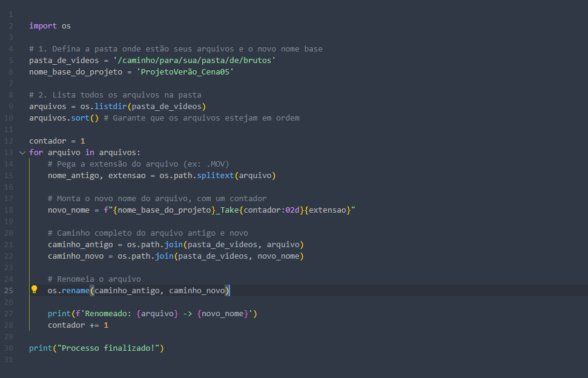

Scripts Práticos em Python para Editores de Vídeo
Publicado em 29 de Junho de 2025 • Leitura de 5 min

Quantas horas você já perdeu em tarefas repetitivas? Renomear dezenas de arquivos de vídeo um por um, converter clipes para o formato correto, organizar pastas... São processos essenciais, mas que consomem um tempo precioso que poderia ser usado na parte criativa da edição.
Vindo do mundo do desenvolvimento de software, aprendi uma lição valiosa: se uma tarefa é manual e repetitiva, ela é uma candidata perfeita para a automação. Hoje, aplico essa mentalidade no meu trabalho com audiovisual.
Neste artigo, vou mostrar dois exemplos práticos de como uso scripts simples em Python para automatizar tarefas comuns, liberando mais tempo para focar no que realmente importa: contar boas histórias.
1. Renomear Arquivos
Imagine que você acabou de receber o material de uma diária de gravação. Você tem 50 arquivos com nomes genéricos como C0001.MOV, C0002.MOV,C0003.MOV. Antes de começar a editar, o ideal é renomeá-los para um padrão organizado, como ProjetoVerão_Cena05_Take01.MOV.
import os
# 1. Defina a pasta onde estão seus arquivos e o novo nome base
pasta_de_videos = '/caminho/para/sua/pasta/de/brutos'
nome_base_do_projeto = 'ProjetoVerão_Cena05'
# 2. Lista todos os arquivos na pasta
arquivos = os.listdir(pasta_de_videos)
arquivos.sort() # Garante que os arquivos estejam em ordem
contador = 1
for arquivo in arquivos:
# Pega a extensão do arquivo (ex: .MOV)
nome_antigo, extensao = os.path.splitext(arquivo)
# Monta o novo nome do arquivo, com um contador
novo_nome = f"{nome_base_do_projeto}_Take{contador:02d}{extensao}"
# Caminho completo do arquivo antigo e novo
caminho_antigo = os.path.join(pasta_de_videos, arquivo)
caminho_novo = os.path.join(pasta_de_videos, novo_nome)
# Renomeia o arquivo
os.rename(caminho_antigo, caminho_novo)
print(f'Renomeado: {arquivo} -> {novo_nome}')
contador += 1
print("Processo finalizado!")
O script usa a biblioteca os do Python para interagir com o sistema de arquivos. Ele lista todos os arquivos na pasta, e então, um por um (for arquivo in arquivos), ele monta o novo nome e usa a função os.rename() para fazer a mágica.
2. Converter Formatos de Vídeo
Outra tarefa comum é a conversão de formatos. Talvez você tenha recebido arquivos em .MOV que são muito pesados, e precisa convertê-los para .MP4 para uma edição mais fluida ou para publicar na web.
Para esta tarefa, usamos o padrão da indústria para manipulação de vídeo: o FFmpeg. O FFmpeg é um programa de linha de comando, e nosso script em Python vai automatizar o processo de chamá-lo para cada um dos nossos vídeos.
Para utilizar o FFmpeg, é preciso instala-lo em seu computador e o método é super simples, através do seu editor de código use esse comando no terminal:pip install ffmpeg-python
import os
import ffmpeg
# Pasta onde estão os vídeos a serem convertidos
pasta_de_videos = '/caminho/para/sua/pasta'
# Loop para encontrar todos os arquivos .MOV na pasta
for arquivo in os.listdir(pasta_de_videos):
if arquivo.endswith('.MOV'):
# Caminho completo do arquivo de entrada
input_path = os.path.join(pasta_de_videos, arquivo)
# Cria o nome do arquivo de saída trocando a extensão para .mp4
output_name = os.path.splitext(arquivo)[0] + '.mp4'
output_path = os.path.join(pasta_de_videos, output_name)
print(f'Convertendo {arquivo} para {output_name}...')
try:
# Usa a biblioteca ffmpeg para criar o comando de conversão
ffmpeg.input(input_path).output(output_path, vcodec='libx264').run()
print(f'Conversão de {arquivo} concluída!')
except ffmpeg.Error as e:
print('Ocorreu um erro:', e.stderr)
print("Processo de conversão finalizado!")
Este script procura por todos os arquivos que terminam com .MOV. Para cada um, ele usa a biblioteca ffmpeg para criar e executar o comando de conversão para o formato .MP4 com o codec libx264, que é ótimo para a web.
Conclusão
Como vimos, com poucas linhas de código, podemos transformar horas de trabalho manual e tedioso em um processo de poucos segundos.
A verdadeira beleza disso não é apenas a automação em si, mas a mudança de mentalidade. É sobre enxergar gargalos no fluxo de trabalho e usar a lógica para criar soluções eficientes, liberando nosso bem mais precioso: o tempo para a criatividade.